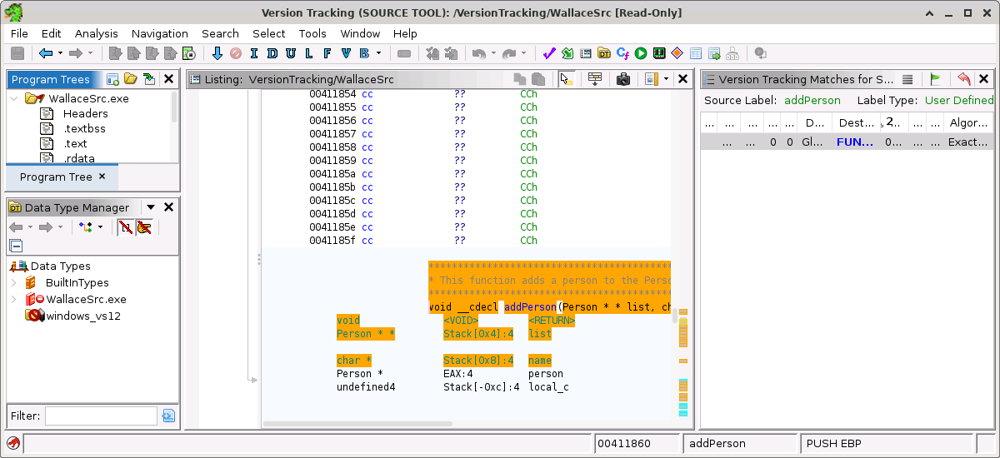

The primary Version Tracking Tool, by default, consists of a few actions and a couple provider views. The primary view of the tool is the Matches Table. The other default component view is the Markup Items Table.
The Version Tracking Tool also has sub-tools that are present when a Version Tracking Session is open.
Version Tracking Session
A version tracking session is created when you run the Version Tracking Wizard. Once created, the session will be saved to the Ghidra Project Window. As you make changes to version tracking data (i.e., matches and markup items), those changes are applied to the current session.
You can open an existing session by dragging it from the Ghidra Project Window's data tree onto:
- A running Version Tracking Tool, or
- The Version Tracking Tool icon in the Ghidra Project Window's Tool Chest, or
- The icon of a running Version Tracking Tool in the Running Tools panel of the Ghidra Project Window.
You can also double-click the session file in the Ghidra Project Window. This will launch the session in a new Version Tracking Tool instance.
When you open a session, the Version Tracking Sub-tools (mentioned below) are also opened. When you close a session, the sub-tools are closed.
Version Tracking Sub-tools
When a session is open in the primary Version Tracking Tool, then two other tool windows will be opened: the source tool and the destination tool. Both tools look the same. They differ in which program they show, the source program or the destination program.
 Each of these tools is similar to default Ghidra Code Browser in that they each provider full Ghidra functionality. However, these tools differ from the default Ghidra Tool in that they offer a few extra plugins, which add version tracking functionality.
Version Tracking Tool Actions
The Create Session
action will launch the Version Tracking Wizard to guide you through the process of create a new version tracking session.
The Add to Session
action will launch the Version Tracking Wizard to guide you through the process of create adding new Program Correlator results to an existing version tracking session.
The Automatic Version Tracking
action uses various correlators in a predetermined order to automatically create matches, accept the most likely matches, and apply markup all with one button press. The following correlators are run in this order:
- Exact Symbol Name Correlator
- Exact Data Correlator
- Exact Function Bytes Correlator
- Exact Function Instructions Correlator
- Exact Function Mnemonics Correlator
- Duplicate Function Instructions Correlator
- Combined Function and Data Reference Correlator
NOTE: It is unlikely that all matches in the entire program will be made and there is no guarantee that no mistakes will be made. This action was designed to try to save as much time as possible while also taking a conservative approach to the automation.
The Open Session... action will launch a session chooser dialog that allows you to pick a previously created session. This action is available only from the File menu.
Version Tracking Menu
This section describes the various menu actions available from the Version Tracking Tool.The File menu
- Add to Session - Shows the Version Tracking Wizard so that you can perform program correlation and have the results added to the currently open version tracking session.
- New Session - Shows the Version Tracking Wizard so that you can create a new version tracking session.
- Auto Version Track - Runs various correlators in a predetermined order and automatically creates matches, accepts the most likely matches, and applies markup all with one button press.
- Open Session - Shows a chooser dialog that allows you to open an existing version tracking session.
- Close Session - Closes the currently open version tracking session.
- Save Session - Saves any changes to the current version tracking session.
- Save Tool - Saves the state Version Tracking Tool (e.g., window locations, size and open state).
- Close Tool - Closes the Version Tracking Tool and the current version tracking session, if one is open.
- Exit Ghidra - Exits the Ghidra application.
The Edit menu
- Tool Options... - Shows the Options Dialog for the Version Tracking Tool.
- Undo - Performs an undo of the last edit (e.g., accepting a match, applying markup, etc).
- Redo - Performs a redo of the previous undo action.
- Reset Source and Destination Tools - Will reset the sub-tools to be the default configurations. This is useful if you have made changes (layout, size, etc.) to the tools and would like to undo those changes.
The Window menu - Contains menu actions to show the various view components that are available in the Version Tracking tool. For help with a specific view component, press F1 on the view component itself or the menu action for that component.
Version Tracking Menu
This section describes the version tracking actions that are available from the sub tools.Create Manual Match
The Create Manual Match action (
Create And Accept Manual Match
The Create And Accept Manual Match action (
) allows the user to create a match for the selected function in the source sub tool to the selected function in the destination sub tool. It then accepts the match if possible. The action will only appear in the popup menu if your cursor is in a function in both tools.
Create And Apply Manual Match
The Create And Apply Manual Match action (
) allows the user to create a match for the selected function in the source sub tool to the selected function in the destination sub tool. It then applies the match if possible. The action will only appear in the popup menu if your cursor is in a function in both tools.